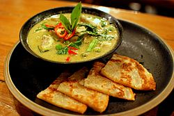

Green Curry

The name "green" curry derives from the color of the dish, which comes from green chillies. The "sweet" in the Thai name (wan means 'sweet') refers to the particular color green itself and not to the taste of the curry. As this is a Thai curry based on coconut milk and fresh green chillies, the color comes out creamy mild green or, as this color is called in Thai, "sweet green".
Ingredients
- 3 Tbsp green curry paste, store bought or homemade
- 1 cup chicken stock, unsalted
- 1 lb chicken thigh, boneless, skinless, cut into 1-inch pieces/li>
- 2 Tbsp palm sugar, finely chopped (can substitute brown or granulated sugar
- 1½ - 2 Tbsp fish sauce
- 3-4 kaffir lime leaves, roughly torn
- 1½ cup bamboo shoots, canned (can use sliced or strips)
- 1 cup Thai basil
- 1 spur chilies or ¼ red bell pepper diced finely
- Jasmine rice for serving
Instructions
- Reduce ¾ cup coconut milk until thick and coconut oil starts to separate from the coconut milk.
- Add curry paste and sauté, stirring constantly over medium heat for about 2 minutes until aromatic. If paste sticks to the bottom of the pan, you can deglaze with a little bit of the remaining coconut milk.
- Add kaffir lime leaves, chicken stock, remaining 1 cup of coconut milk, palm sugar and 1 Tbsp fish sauce. Bring to a simmer and let simmer gently for 10-15 minutes or until the chicken is fork tender.
- Once the curry is done simmering, add bamboo shoots and bring to a boil. If you prefer your peppers to be more cooked, add them at this stage. Once boiling, remove from heat.
- Taste and add more fish sauce and/or sugar as needed.
- Stir in Thai basil and spur chilies or bell peppers.
- Serve with jasmine rice